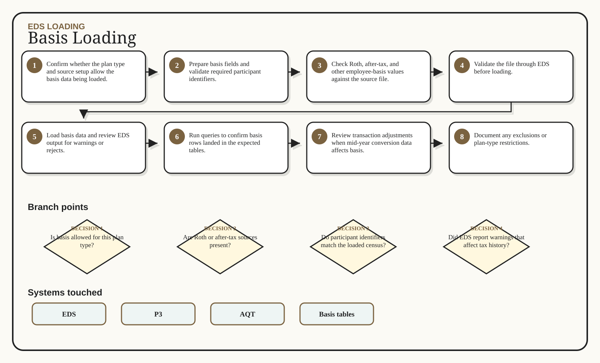

EDS Loading / Excalidraw flow
Basis Loading
Load Roth and after-tax basis without breaking tax history.
1Confirm whether the plan type and source setup allow the basis data being loaded.
2Prepare basis fields and validate required participant identifiers.
3Check Roth, after-tax, and other employee-basis values against the source file.
4Validate the file through EDS before loading.
5Load basis data and review EDS output for warnings or rejects.
6Run queries to confirm basis rows landed in the expected tables.
7Review transaction adjustments when mid-year conversion data affects basis.
8Document any exclusions or plan-type restrictions.
Generated whiteboard
Multi-branch visual route

Branch map
Decisions that change the route
1
Is basis allowed for this plan type?
2
Are Roth or after-tax sources present?
3
Do participant identifiers match the loaded census?
4
Did EDS report warnings that affect tax history?
5
Are transaction adjustments needed?
Swimlane
Inputs -> action -> output
Input
Action
Output
Basis source file
EE basis fields
Plan type
Roth start dates
Confirm whether the plan type and source setup allow the basis data being loaded.
Prepare basis fields and validate required participant identifiers.
Check Roth, after-tax, and other employee-basis values against the source file.
Validate the file through EDS before loading.
Loaded basis records
EDS output notes
Query verification
Restriction notes
System boxes
Where the work happens
EDS
P3
AQT
Basis tables
Sticky notes
Do not miss these
Done means done